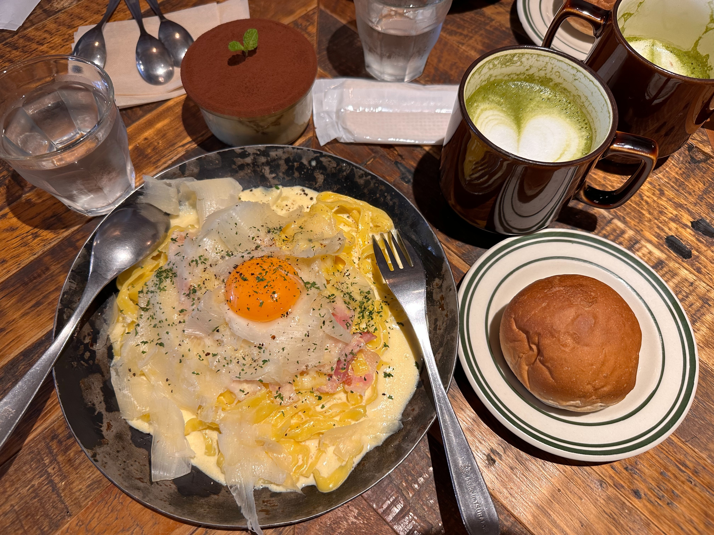

EGG BABY CAFE
御徒町駅から徒歩３分、朝１０時から営業開始、卵料理専門のCAFEです。今回注文したのはラスパドゥーラカルボナーラ、もちもちの生パスタに濃厚な卵、表面を薄く削ったチーズを合わせ、風味が良い一品です。
御徒町駅から徒歩３分、朝１０時から営業開始、卵料理専門のCAFEです。今回注文したのはラスパドゥーラカルボナーラ、もちもちの生パスタに濃厚な卵、表面を薄く削ったチーズを合わせ、風味が良い一品です。
総武線亀戸駅出てすぐ、もり一回転寿司にたどり着く、席はカウンター席のみ。シャリは赤酢で作った赤シャリ、寿司職人さんに口頭で注文できます、自分が一番好きな寿司屋です。
吉祥寺にあるほんの小さな店だが、こだわりをふんだんに詰めたカフェです、夜になると、お店の照明が明るく過ぎず、暗く過ぎないな空間で食事を楽しめる